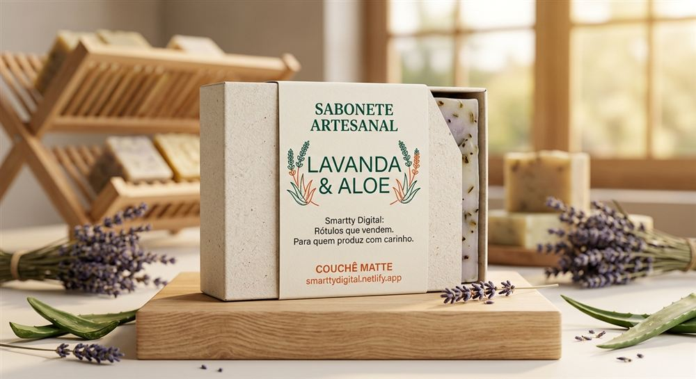
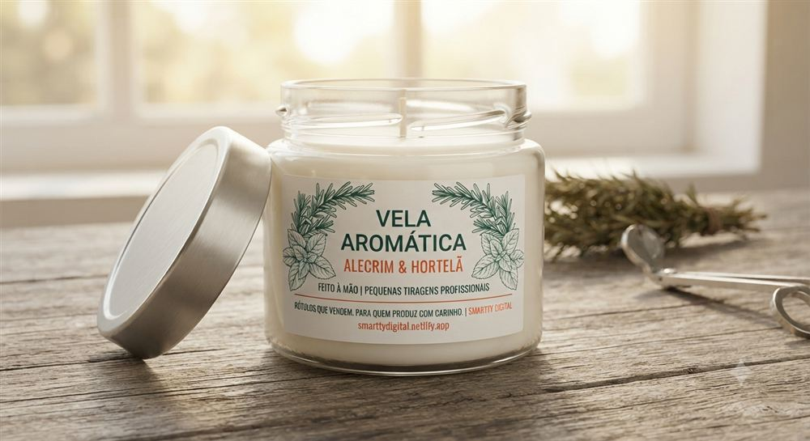
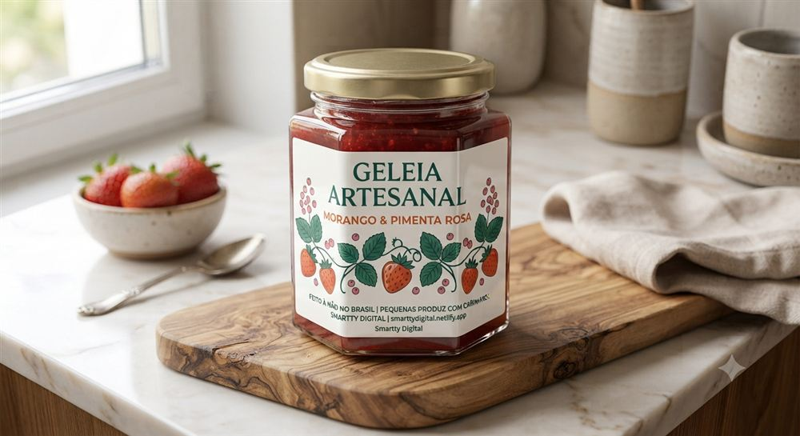
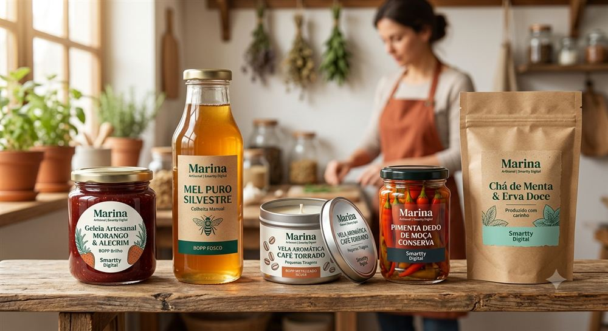

Cada vez mais gente está desenhando o rótulo do próprio produto direto numa inteligência artificial — o ChatGPT, o Nano Banana (o gerador de imagem do Gemini, do Google) ou o Midjourney. Em poucos minutos, aparece na tela um rótulo lindo, com a cara da sua marca. Só que aí vem a pergunta que ninguém te avisa antes: "e agora, como eu imprimo isso?"
Se você já mandou essa imagem pra alguma gráfica e ouviu "isso não serve pra impressão", não é você que fez algo errado. É que a arte que sai da IA e a arte que vai pra máquina de impressão são duas coisas diferentes — e ninguém costuma explicar essa diferença antes.
Por que a imagem da IA não pode ir direto pra gráfica
ChatGPT, Nano Banana e Midjourney geram imagem — um arquivo feito de pixels (normalmente PNG ou JPG). Já a impressão profissional de rótulo exige arte vetorial: texto convertido em curvas, formas desenhadas matematicamente, normalmente entregue em PDF/X-4. É a mesma exigência que já vale pra qualquer cliente da Smartty, com ou sem IA no processo.
Na prática, isso significa que uma imagem de IA, se for ampliada pro tamanho real do rótulo, sai borrada ou pixelizada — e o corte final (a linha exata onde a faca digital recorta o rótulo) também depende de vetor, não de imagem. Por isso a imagem sozinha nunca vai direto pra produção, em nenhuma gráfica séria.
A boa notícia: sua arte de IA não foi desperdício
A imagem que você gerou continua muito valiosa — ela é a sua referência visual perfeita, o briefing que qualquer pessoa (você mesma, um designer, ou a nossa equipe) usa pra desenhar a versão vetorizada, pronta pra impressão real. É exatamente o mesmo papel que uma arte de teste sempre teve por aqui: serve pra validar a ideia, mas a versão que vai pra produção é sempre a vetorizada.




Como a Manu te ajuda nessa transição
A Manu já aplica essa mesma régua com toda cliente, independente de como a arte nasceu: qualquer arquivo serve pra teste, mas a arte definitiva precisa estar em vetor. Se você não sabe vetorizar sua imagem de IA, temos designers parceiros que recriam a versão vetorizada usando sua imagem como referência, com custo informado antes de qualquer coisa. Detalhamos os caminhos possíveis em como vetorizar uma arte de IA pra imprimir.
Um mini-guia pra não perder tempo
- Gere na maior resolução possível. Quanto mais nítida a imagem original, mais fácil (e mais barato) fica vetorizar depois.
- Peça o rótulo "plano", sem mockup 3D. Uma arte só do desenho do rótulo, sem o vidro ou o pote em volta, vira vetor muito mais rápido do que uma cena inteira gerada pela IA.
- Mande pra Manu antes de decidir sozinha. Ela olha sua imagem e já te diz se dá pra vetorizar direto ou se vale mais a pena recriar do zero.
- Escolha o material certo pro seu produto — isso não muda por causa da IA: vela pede BOPP resistente ao calor, cosmético pede resistência a água e óleo, alimento que vai pra geladeira pede a mesma coisa.
Já tem uma arte feita com IA?
Manda pra Manu no WhatsApp e descubra se dá pra vetorizar direto, ou o que falta pra virar um rótulo de verdade.
💬 Falar com a ManuE se essa é a primeira leva da sua marca, não precisa arriscar um estoque grande pra testar a ideia que a IA te ajudou a visualizar: na Smartty, a tiragem começa em 50 unidades por modelo, e se forem vários produtos de uma vez, dá pra lançar a linha completa sem travar no estoque.
← Voltar pro blog